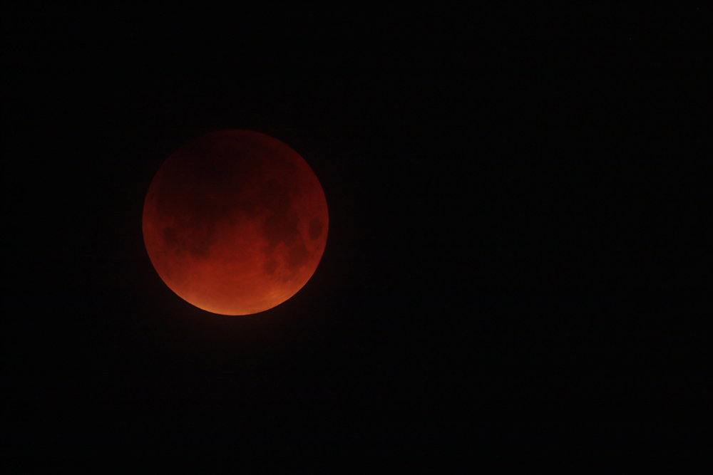

Planetariums
Observatories
Universities
Clubs
More Outreach
Observatories
Space Agencies
-
Planetariums & Science Museums
Astronomy Clubs Worldwide
Utah Astronomy Resources
World Astronomy Resources
|
OBSERVATORY STATUS: We'll be open tonight at 7! We'll be hosting a short lecture about dark skies from students at the Dark Sky Minor course, feel free to drop by at 7pm to see! Updated: 4:00pm 4/27/22 We are open to the public Wednesday nights for observing when the weather is clear, and physics demos and talks when it's not clear. We offer scheduled visits for groups and schools also! Please use the email below for contact. Email observatory@physics.utah.edu or message us on Facebook for any questions regarding tours, events, and star parties. https://www.youtube.com/channel/UC58qcT1nxowNyaOdu9o4jUg Be sure to check out our facebook page! See updates for new events with the department and special openings of the observatory! Click the "like" button on the right side of this page just above the pictures of space awesomeness. Call 58-SPACE (587-7223) after 7:00pm on Wednesdays if you need help finding us while on campus. This number is not monitored outside of this time. Observatory and Celestial Event Calendar The South Physics Observatory located at the University of Utah offers FREE public star parties on CLEAR Wednesday nights. These are open to all ages, interests and groups. We open at various times through the year corresponding to changing sunset times so please check the web page for current scheduled openings. During the visit, expect to see galaxies, nebulae, stars, moons, planets, and clusters. Feel free to ask questions about the universe, science, and what you're seeing. We may also offer lectures, demos, and special events during the star parties. The events are outdoors so please dress appropriately for weather. We also try to open during important astronomical events so be sure to watch for the next lunar/solar eclipse, Mercury transit, or bright comet. SPO can also offer assistance for those looking to learn to use telescopes for personal use, astrophotography, or for school/science fair projects. If you're looking to purchase a telescope and need help with all the choices, or if you're having trouble setting yours up, bring them to us and we may be able to help. Also, after a few hours of training, you'll be able to use the telescopes and cameras at your leisure at SPO (with assistance). New Stuff Come check out our new meteorite display!! We'll have it out for viewing during our normal star party times on Wednesdays. Check out the photo of the supernova in M82 taken from SPO on 1/24/14. Image is on the pane to the right. Click HERE for a gif movie of the eclipse from our Willard Eccles Observatory. Click here for a gif movie of the eclipse from Bryce Canyon. Newest images from WEO as of 9-19-10 are here. Check out the videos taken from the Willard L. Eccles Observatory with the Leonid bolide streaking across Utah here. | ||
Current Sky and Astronomy Info | ||
Current Weather Live Infrared Satellite Provided by Intellicast.com 
Current Weather Clear Sky Chart for Salt Lake City 
|
||

| Have an astronomy related question? Click here to ask an astronomer! |
Information about our Universe |
||
Astro photography
Information
Observational Astro Info
Information and How-to

Recent SPO Images

Sept. 27 Super Blood Moon Eclipse


Dumbbell in Black and White Taken 8-31-15


Dumbbell in Color Taken 8-31-15

Jupiter and Venus conjunction June 30, 2015


Asteroid 2004 BL86 long exposure

Triple Shadow transit and a moon of Jupiter
Jupiter Shadow Transit 1-24-15
Planetary Nebula M97, The Owl Nebula 5-1-14